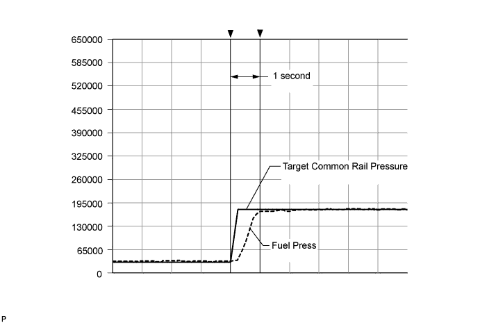

DTC P0093 Fuel System Leak Detected - Large Leak |
| DTC Detection Drive Pattern | DTC Detection Condition | Trouble Area |
| After idling for 60 seconds, run engine at 2500 rpm for 30 seconds | The fuel pressure decreases greatly when the engine is running (1 trip detection logic). |
|
| DTC No. | Data List |
| P0093 |
|
| Engine Speed | Fuel Press |
| Idling | Approximately 27 to 37 MPa |
| 2500 rpm (No engine load) | Approximately 50 to 70 MPa |
| 1.CHECK ANY OTHER DTCS OUTPUT (IN ADDITION TO DTC P0093) |
Connect the intelligent tester to the DLC3.
Turn the engine switch on (IG) and turn the tester on.
Enter the following menus: Powertrain / Engine / DTC.
Read the DTCs.
| Display (DTC Output) | Proceed to |
| P0093 is output | A |
| P0093 and other DTCs are output | B |
|
| ||||
| A | |
| 2.PERFORM ACTIVE TEST USING INTELLIGENT TESTER (FUEL LEAK TEST) |
Connect the intelligent tester to the DLC3.
Start the engine and turn the tester on.
Enter the following menus: Powertrain / Engine / Active Test / Test the Fuel Leak.
Visually check the fuel supply pump, fuel injector and fuel line located between the fuel supply pump and common rail for fuel leaks and fuel pressure leaks. Also, perform the same check on the fuel line between the common rail and the fuel injector.
|
| ||||
| OK | |
| 3.PERFORM ACTIVE TEST USING INTELLIGENT TESTER (FUEL LEAK TEST) |
Connect the intelligent tester to the DLC3.
Start the engine and turn the tester on.
Enter the following menus: Powertrain / Engine / Active Test / Test the Fuel Leak / Data List / Fuel Press and Target Common Rail Pressure.
When the Active Test is started, check that Fuel Press follows Target Common Rail Pressure and that the fuel pressure increases.

|
| ||||
|
| ||||
| 4.CHECK WHETHER DTC OUTPUT RECURS (DTC P0093) |
Check the fuel receiver gauge. If the indicator is illuminated, add fuel.
Operate the hand pump of the fuel filter, and bleed air from the fuel line.
Connect the intelligent tester to the DLC3.
Clear the DTCs (Click here).
Start the engine, and accelerate the engine at full throttle several times.
Enter the following menus: Powertrain / Engine / DTC.
Read the DTCs.
| Result | Proceed to |
| P0093 is output | A |
| No DTC is output | B |
|
| ||||
| A | |
| 5.CHECK WHETHER DTC OUTPUT RECURS (DTC P0093) |
Start the engine, and allow the engine to idle for 20 seconds or more.
Stop the engine, and wait for 15 seconds or more.
Perform the procedures above 3 times or more in succession.
Enter the following menus: Powertrain / Engine / DTC.
Read the DTCs.
| Result | Proceed to |
| P0093 is output | A |
| No DTC is output | B |
|
| ||||
| A | |
| 6.READ VALUE USING INTELLIGENT TESTER (COMPENSATORY INJECTION VOLUME FOR EACH CYLINDER) |
Connect the intelligent tester to the DLC3.
Turn the engine switch on (IG) and turn the tester on.
Start the engine.
After warming up the engine (engine coolant temperature is 75°C (167°F) or more), idle the engine (A/C off and electrical load off) for 1 minute or more.
Enter the following menus: Powertrain / Engine / Data List / Injection Feedback Val #1 to #8.
Read the values.
|
| ||||
| OK | |
| 7.REPLACE FUEL SUPPLY PUMP |
Replace the fuel supply pump (Click here).
| NEXT | |
| 8.CHECK WHETHER DTC OUTPUT RECURS (DTC P0093 OUTPUT AREA) |
Connect the intelligent tester to the DLC3.
Turn the engine switch on (IG) and turn the tester on.
Clear the DTCs (Click here).
Allow the engine to idle for 1 minute and then run it at 2500 rpm for 30 seconds.
Enter the following menus: Powertrain / Engine / DTC.
Read the DTCs.
| Result | Proceed to |
| No DTC is output | A |
| P0093 is output | B |
|
| ||||
| A | ||
| ||
| 9.REPAIR OR REPLACE FUEL LEAKAGE POINT |
|
| ||||
| 10.DTC CAUSED BY RUNNING OUT OF FUEL |
|
| ||||
| 11.REPLACE FUEL INJECTOR |
Replace the fuel injector (Click here).
|
| ||||
| 12.REPLACE ECM |
Replace the ECM (Click here).
| NEXT | |
| 13.CONFIRM WHETHER MALFUNCTION HAS BEEN SUCCESSFULLY REPAIRED |
Connect the intelligent tester to the DLC3.
Clear the DTCs (Click here).
Turn the engine switch off.
Turn the engine switch on (IG) and start the engine.
Allow the engine to idle for 1 minute and then run it at 2500 rpm for 30 seconds.
Confirm that the DTC is not output again.
Enter the following menus: Powertrain / Engine / Utility / All Readiness.
Input DTC P0093.
Check that STATUS is NORMAL. If STATUS is INCOMPLETE or UNKNOWN, maintain the engine at 2500 rpm for 30 seconds and then increase idling time.
| NEXT | ||
| ||